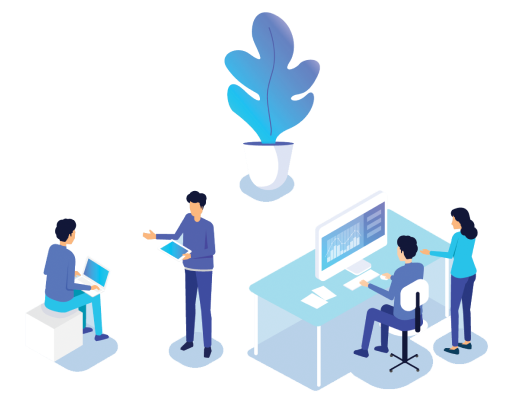
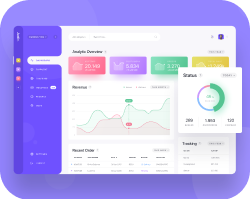
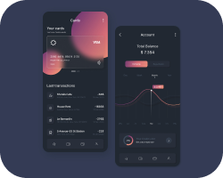
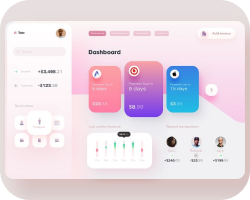
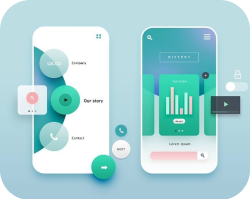
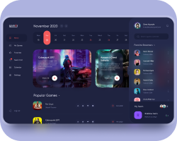
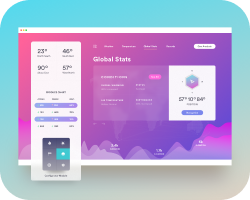
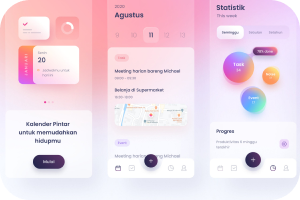
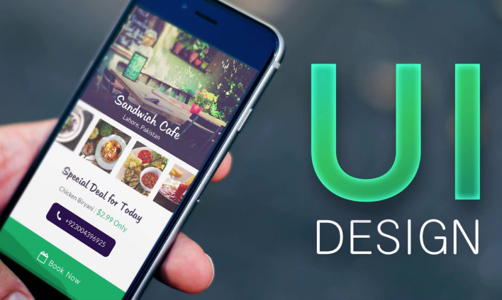
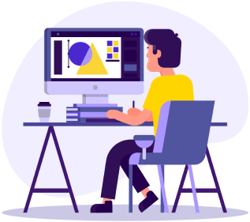

UI & UX
- Что это?
- Зачем это нужно?
Если же посмотреть глобально, то понятие UX/UI относится не только к дизайну. С точки зрения удобства и эстетики можно оценить любой предмет, с которым мы взаимодействуем, ― кнопки лифта, интерьер ресторана, бытовые приборы.
Если же посмотреть глобально, то понятие UX/UI относится не только к дизайну. С точки зрения удобства и эстетики можно оценить любой предмет, с которым мы взаимодействуем, ― кнопки лифта, интерьер ресторана, бытовые приборы.
Востребованность UX/UI дизайнера
Интерфейсы, которые делают разработчики, должны быть не только красивы, но и понятны. Именно от качества работы UX/UI-дизайнера зависит, как быстро человек сможет получить то, зачем он заглянул на сайт. Пользовательские интерфейсы в приложениях и на сайтах далеко не всегда привлекательны. Поэтому хорошие специалисты ещё долго будут востребованы на рынке.

В современном дизайне UX и UI практически всегда идут рядом, потому что они очень тесно связаны. Да, действительно, в некоторых крупных агентствах пользовательские сценарии и визуальные интерфейсы продумывают разные специалисты. Но всё же результат будет гораздо лучше, если весь проект будет вести один дизайнер, поскольку так он будет строить работу комплексно.
- 
- 
- 
- 
- 
- 
- 
UI дизайн
Графическое отображение замысла. Это кнопки, на которые нажимает пользователь, изображения, слайдеры, формы ввода данных, шаблон и структура страницы, анимации, переходы и другие интерактивные элементы сайта.
На UI обращают больше внимания при создании имиджевых онлайн-ресурсов, сайтов для продвижения товаров и услуг премиум-класса. Здесь главная задача ― не быстро подвести пользователя к целевому действию, а дать ему рассмотреть интерфейс, погрузиться в атмосферу.
После того как прототип готов, начинается работа с UI ― дизайнер переходит к разработке визуальной оболочки сайта.

UI дизайнер
Специалист, который делает взаимодействие продукта и пользователя максимально интуитивным, очевидным и эффективным для достижения целей пользователя. Простыми словами, UI-специалист — это дизайнер, отвечающий за внешний вид пользовательского интерфейса.
Задачи UI включают:
- Подбор фирменных шрифтов и цветов ― на основе предыдущих исследований аудитории. В некоторых случаях они прописаны у заказчика в брендбуке, но, как правило, чёткие инструкции есть только у крупных компаний. При разработке небольших сайтов или промостраниц дизайнер использует собственные исследования.
- Разработка набора базовых элементов сайта: иконок, кнопок, полей ввода, строки поиска. В случае крупных проектов они могут быть объединены в UI-кит, над которым потом будут работать и другие дизайнеры.
- Визуализация механики взаимодействия пользователя с интерфейсом. На этом этапе прорабатывается необходимая анимация и микровзаимодействия. Например, увеличение баннеров при наведении мышки или анимация кнопок после нажатия.
- Хороший дизайн учитывает современные графические тренды, однако главное в интерфейсе ― удобство для целевой аудитории. Например, если дизайнер создаёт ресурс для финансовых продуктов, основные пользователи которого ― мужчины старше 40, то вряд ли в нём будет хорошо смотреться ретростиль или пёстрые градиенты.
- Круговые надписи, градиенты и неоновый отсыл к девяностым ― яркие тренды этого года.
UX дизайн
Это процесс создания полезных, простых и приятных в использовании продуктов (цифровых или физических).

UX выходит на первое место при проектировании CRM-систем, дашбордов, внутренних рабочих интерфейсов. Визуальная часть здесь на втором плане ― главное, насколько удобно будут размещены данные.
UX дизайнер
Специалист, задача которого сделать продукт удобным, понятным и логичным для всех пользователей. От его работы зависит, сможет ли клиент быстро и удобно получить желаемую услугу. Перед запуском продукта он всегда совершает большую подготовительную работу: проводит аудит конкурентов, опрашивает пользователей, изучает целевую аудиторию сайта или приложения.